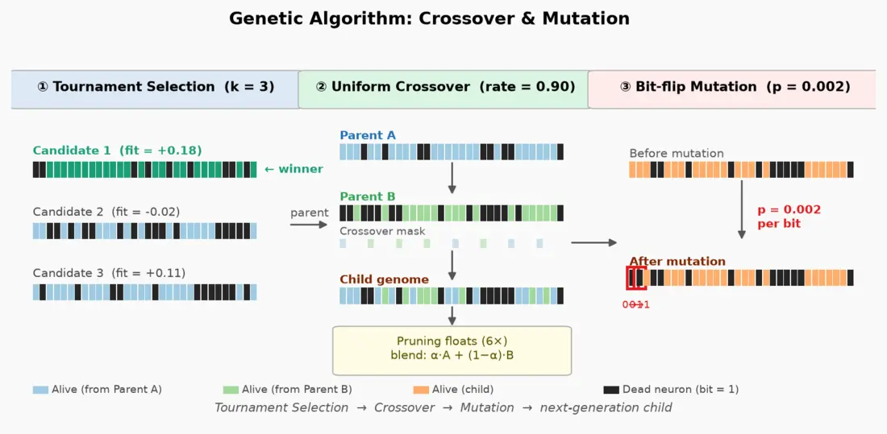
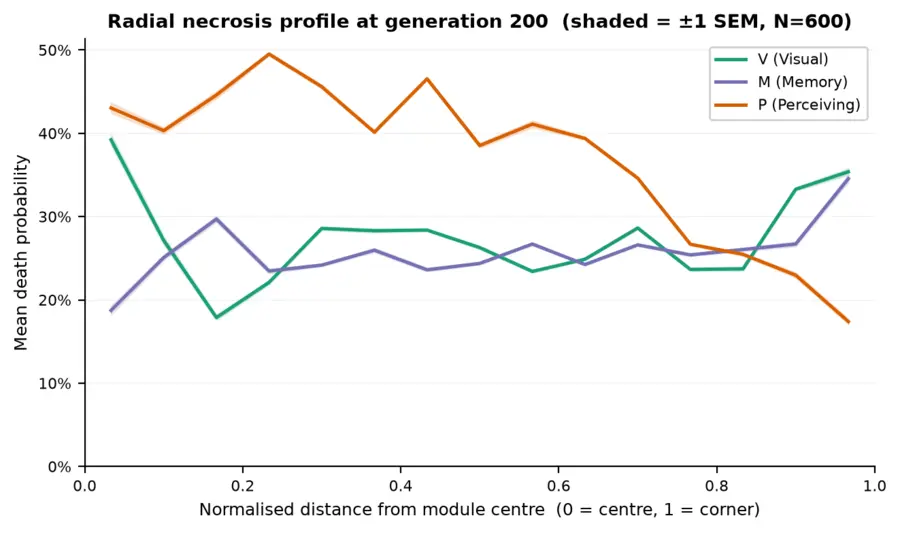

40 Hz gamma entrainment in VR
A closed-loop VR and EEG system built on GENUS, the 40 Hz sensory stimulation studied at MIT for Alzheimer's disease. Players navigate a VR maze while the system delivers 40 Hz light and sound, reads their brain waves live, and adjusts the maze to their cognitive state.
Doing a task during 40 Hz stimulation strengthens entrainment, and spatial navigation is a task that works the hippocampus. So instead of a passive flicker, the stimulation runs inside a maze that gets harder or easier depending on what the EEG says.
I framed it as system validation in healthy participants, not treatment. Data was collected under an IRB-approved protocol across a baseline and three conditions: standard GENUS stimulation, GENUS in VR, and GENUS on a desktop screen.
- Muse 2 EEG
- Python · pylsl
- Lab Streaming Layer
- UDP
- Unity 2022.3
- XR Interaction Toolkit
- Meta Quest 2
The closed loop
Runs continuously during a session- SenseMuse 2 headsetFour EEG channels at 256 Hz, streamed over Lab Streaming Layer.
- DecodePython pipelineSpectral analysis and artifact checks, then a classifier reads theta, alpha and gamma as a cognitive state.
- BridgeUDP socketState messages go to the headset over UDP, which held up where LSL discovery failed on the Quest.
- AdaptUnity VR mazeMaze difficulty shifts in real time while 40 Hz light and sound keep running.
Students for Students
Nonprofit peer-learning platform for widespread access to quality education. Student made and shared courses, study guides, etc.
- Course pages pulled from a WordPress Tutor LMS backend through its API
- Tutor profiles and a searchable course catalog
- Sign-in, protected routes and material uploads on Supabase, with row-level security
- GSAP transitions and a light and dark theme toggle
- React 19
- Vite
- Supabase
- WordPress · Tutor LMS
- GSAP
Three-module RNN and a genetic algorithm for hallucinations
A working Python reconstruction of the Nara, Fujii, Tsukada and Tsuda (2022) perception model, then a genetic algorithm that searches for the patterns of neuron death that make it hallucinate, as in dementia with Lewy bodies.
The network has a visual module, a memory module and a perceiving module. Each stored memory is a cycle of ten states. A hallucination is when the perceiving module settles on a different stored cycle than the one the network holds: a coherent percept that is wrong.
The search evolves 3,000-bit "death vectors", one bit per neuron. Fitness rewards a stable wrong percept and slightly penalizes larger lesions, so the population converges on the smallest damage that is enough.
What the fitness function looks for
Healthy networks keep the target percept. The evolved lesions push the perceiving module into a different face it has stored. Both grids use the real decoded P patterns.


Sites for places that feed people
One full ordering platform for a family Chinese restaurant, and a run of free websites for Austin food businesses that didn't have one.
Four Seasons
A marketing site and lunch-ordering platform for a family Chinese restaurant. Visitors see the menu, hours and a calendar of upcoming school-lunch events, then order and pay for a specific event. Customers never need an account.
- Admin dashboard to schedule lunch events and watch orders come in
- Square Web Payments in the browser, charged server-side through Square's payments API
- All server logic in Supabase Edge Functions, with Postgres row-level security and no separate backend
- React 19 + TypeScript
- Vite
- React Router 7
- Supabase
- Edge Functions
- Square
Free sites for Austin food businesses
Live on VercelThings that move
Where I learned front-end: hand-written CSS and JavaScript animation experiments, personal sites, and Lumi, an AI companion for staying focused.
Lumi
A calm AI companion for students. Lumi talks you through a hard day, remembers what matters to you between conversations, and plans your schedule with you.
- Companion chat with memory extraction and spoken replies
- Focus room with rain and forest sounds, music and guided 4·7·8 and box breathing
- Task planner and a shelf of short reads on focus and starting work
- Next.js 14
- Claude API
- OpenAI TTS
- Web Audio